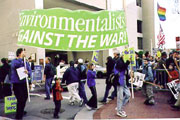

|
Home | About Us | Services | Team | Join Us | Awards | Calendar | Vote | Supporters | Contact |
||||||
|
| |||||
|
◄ eIEN Kashmir Global Partnerships Peace And Environment Protection KASHMIR |
||||||
|
As a peacemaking tool, the environment offers unique opportunities for countries that may differ politically, socially, or economically to join forces towards a common and positive goal: improving their environment. Initiatives such as peace parks, shared river basin management plans, regional seas agreements and joint environmental monitoring programs that combine politics and ecology are making headway in both the environmental movement and the peacemaking process. At PEP, esro Kashmir and Brighton Peace & Environment Centre United Kingdom initiative, founded in 2004 as the Kashmir based Peace Foundation with the goal of promoting independent peace and environment research in Kashmir. We have a mission with agenda to motivate the political regime to resolve political instability with ecological stability and to promote green code of conduct among defence think tank that advance the well being of both environment and people. We are a small, but effective, group of experienced eco advocates who seek to initiate catalyze actions that prevent destruction of Kashmir's natural resources on the name of security planning and operations and level the playing field by infusing resources and broad-based support into campaigns to protect fragile ecology of Kashmir. Working Group is also acting as non political Watchdog for Military activities ( both India & Pakistan) affecting ecological stability of Kashmir region of Indian Sub Continent. We are committed to establish a vibrant environmental movement through out state of J&K, on issues related to defence and ecology. Saving our environment is something we can all unite around and that this common cause can act as a bridge between the two nuclear rival countries through Jammu and Kashmir.

Population growth, water scarcity, degraded ecosystems, forced migration, resource depletion, wildlife conflicts. Since 2004, eIEN Kashmir Center’s Peace & Environment Protection Project has explored the connections among these major challenges and their links to conflict, human insecurity, and foreign policy. PEP Kashmir brings policymakers, practitioners, and scholars from around the world to Kashmir, to address the public and fellow experts on environmental and human security. The project publishes and distributes 1,000 free copies of two annual journals—the Environmental Change and Security Project Report and the Kashmir Environment Series—in addition to publishing a biannual newsletter and original research.
Our Vision Statements :
We inform and educate the public through the media, internet, and publications, about significant issues and legal battles that need immediate attention and support, and we monitor, generate, and disseminate media coverage of important protection and conservation issues. We research, analyze, and write about controversial issues that the public needs to mobilize against to protect ecology from further degradation and depletion. PEP Kashmir offers different forms of consultancy in the areas of early warning and peacebuilding: Strategic Conflict Analysis, Peace and Conflict Impact Assessment , Evaluations of Peacebuilding Programs, Methods and Strategies , Portfolio Analysis and Tools Analysis. Although we cannot foresee that India and Pakistan making peace based on a commitment to shared conservation alone. "It is an area that could be included down the line as a positive result of achieving peace." A handful of success stories round the world are hinting it just might work. However PEP is here to Initiate catalyze actions that prevent further destruction of Kashmir's natural resources on the name of defence and security planning and operations.
Peace and Environment Protection Kashmir looks forward to your involvement and continued support. We have much to do together in our effort to conserve and protect the environment from military maneuvers within Kashmir for future generations. Lets come together and make this mission a vision of success.
The presentation of the cpep material throughout this e publication do not imply the expression of any opinion whatever on the part of esro Kashmir concerning the legal status of the country, territory, city or area of its authorities, or concerning the delimitation of its frontiers or boundaries.
|
||||||
|
This Web Site can be best
viewed at 1024 × 768 pixel resolution |
© eIEN Kashmir 2002
- 2007 | Powered by Web Dimensions - South Korea Environment Services And Research Organization (esro) International
Environment Network South Asia Western Himalaya Kashmir
|
|